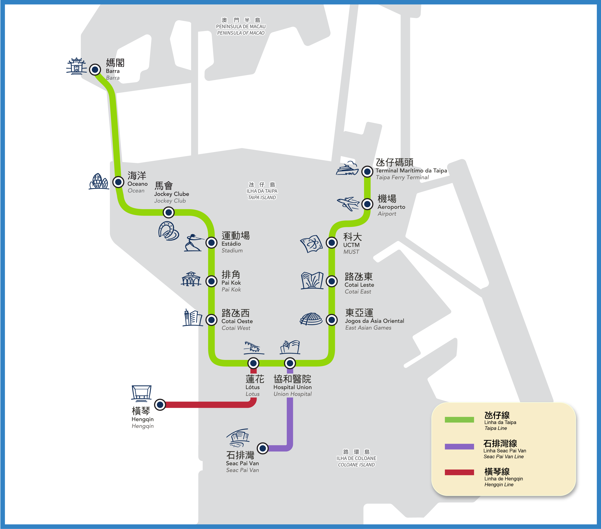

去程航班
6/6
2026-06-06 16:25 起飛，18:05 抵達
台中清泉崗機場（RMQ／第二航廈）至澳門國際機場（MFM）
RMQ 16:25
→
MFM 18:05
2026/06/06 至 2026/06/09
以新濠影匯酒店為住宿中心，整合航班、行前準備、每日行程、輕軌與接駁車、餐飲、採購與入境注意事項。
先看航班、行前準備與高風險提醒；出門前可直接使用下方勾選清單。
肉切酥、雞仔餅、肉鬆鳳凰卷、豬肉乾、牛肉乾、含肉鬆糕餅，禁止攜帶入境台灣。
劇院空調強，建議攜帶薄外套；前排潑水席雖提供雨衣，仍可替小孩多備一套衣物。
澳門幣與港幣常見 1:1 使用但不退差價；公車不找零，輕軌建議備澳門幣或電子支付。
行程時間為暫定參考，可依小孩體力、天氣與排隊狀況彈性調整。
抵達日以入境、入住與飯店周邊晚餐為主。
| 時間 | 行程 | 交通 | 備註/建議 |
|---|---|---|---|
| 18:05 | 抵達澳門國際機場 MFM | - | 入境、領行李抓 40-60 分鐘。 |
| 19:00-19:30 | 機場 → 新濠影匯 | 優先：新濠影匯/新濠天地機場接駁 | 可搭輕軌機場站到蓮花站。 |
| 20:00 後 | 晚餐（待補） | 飯店內步行 | 穩定方案：八方美食廣場、華人冰室、映星匯大堂咖啡；若訂得到位，可選星匯餐廳晚餐自助餐。 |
半島步行景點較多，建議少帶推車並保留回程接駁時間。
| 時間 | 行程 | 交通 | 備註/建議 |
|---|---|---|---|
| 08:30-10:00 | 早餐：巴黎人自助餐 Le Buffet | 新濠影匯到巴黎人可步行 | 早餐餐期 07:00-13:00，建議提早入場。 |
| 10:30-11:30 | 巴黎人/威尼斯人/倫敦人 → 澳門中區 | 金沙系澳門中區接駁車 | 週五至週日有班；下車後步行至議事亭前地、大三巴。 |
| 11:30-15:30 | 大三巴、議事亭前地、玫瑰堂、手信街 | 步行 | 大三巴石階多，建議少帶推車。 |
| 15:30-17:00 | 大三巴周邊美食與伴手禮 | 步行 | 可買鉅記、晃記、咀香園；肉鬆/肉乾類不建議帶回台灣。 |
| 17:00-18:00 | 澳門中區 → 路氹 | 接駁車回巴黎人/倫敦人/威尼斯人 | 19:30 水舞間，建議 18:45 前到場。 |
| 19:30 | 水舞間 | 新濠天地 | 票務與入場規則以新濠天地公告為準。 |
本日重點是旅遊塔午餐、永利皇宮纜車與表演湖。
| 時間 | 行程 | 交通 | 備註/建議 |
|---|---|---|---|
| 08:30-10:00 | 早餐：新濠影匯星匯餐廳 | 飯店內 | 早餐 07:00-10:30。 |
| 12:00-12:50 | 新濠影匯 → 澳門旅遊塔 | 輕軌蓮花站 → 媽閣站，轉公車 60/65 到 M177 澳門旅遊塔 | 13:30 訂位。 |
| 13:30 | 澳門旅遊塔 360 度旋轉餐廳 | - | 用餐後可直接接觀景層或紀念品。 |
| 17:00-18:30 | 澳門旅遊塔 → 永利皇宮 | 搭旅遊塔免費接駁（美高梅／葡京系） | 纜車約 16:00 起營運；表演湖日間每 30 分、18:00 後每 20 分一場。 |
| 晚間 | 永利皇宮 → 新濠影匯 | 輕軌路氹東站 → 蓮花站 | 永利皇宮最近輕軌站為路氹東站。 |
離境日避免再跑半島，行李與機場時間優先。
| 時間 | 行程 | 交通 | 備註/建議 |
|---|---|---|---|
| 09:00 | 早餐：新濠影匯麥當勞 | 飯店內/附近 | 先確認機場接駁末班與班距。 |
| 10:00 | 退房寄行李 | 飯店 | 保留拿行李與移動時間。 |
| 10:30-13:00 | 官也街 | 輕軌蓮花站 → 排角站，步行 5-8 分鐘 | 適合午餐、小吃、伴手禮。 |
| 13:00-15:30 | 自動步行系統 → 威尼斯人 | 官也街經望德聖母灣自動步行系統到威尼斯人 | 買安德魯蛋塔最順。 |
| 15:30-16:20 | 威尼斯人/巴黎人/倫敦人補買 | 步行 | 可順看 Starbucks Reserve 城市杯。 |
| 16:20-16:40 | 回新濠影匯拿行李 | 步行 | 不建議再跑澳門半島。 |
| 17:00 | 抵達澳門機場 | 新濠機場接駁 | 19:15 起飛，17:00 前到機場。 |
本頁籤保留文字資訊並插入提供的輕軌路線圖，方便現場對照站名。

班次以現場與飯店公告為準，以下整理為行程使用時的快速索引。
搭乘地點：新濠影匯接駁巴士大堂。生效資訊：2026/5/23。
| 目的地 | 由新濠影匯出發 | 往新濠影匯 | 班距 |
|---|---|---|---|
| 關閘 | 09:35-23:30 | 09:00-23:00 | 6-8 分，21:00 後 15-20 分 |
| 氹仔客運碼頭及澳門國際機場 | 10:00-22:00 | 09:30-21:30 | 12-25 分 |
| 澳門中區 | 12:00-21:30 | 12:30-21:15 | 15 分 |
| 橫琴澳方口岸 | 10:20-21:00 | 09:45-20:30 | 5-10 分 |
| 新濠天地 | 09:35-23:30 | 09:20-23:20 | 6-8 分 |
B1 層旅遊巴停車場；機場線於正門大堂。
東翼大堂、倫敦人購物中心、名匯南翼大堂。
西翼大堂；氹仔碼頭線於正門大堂。
整理大三巴、澳門旅遊塔與官也街的主要動線。
新濠影匯 → 蓮花站 → 媽閣站 → 公車 60/65 至 M177 → 澳門旅遊塔 → 美高梅/葡京系接駁 → 永利皇宮 → 路氹東站 → 蓮花站 → 新濠影匯。
若小孩體力下降，可把旅遊塔後段改成計程車或直接回飯店，保留晚間休息時間。
整合飯店自助餐、非自助餐與大三巴、官也街推薦美食。
| 地點 | 餐期/價格摘要 | 特色 |
|---|---|---|
| 新濠影匯 星匯餐廳 Spotlight | 早餐成人 MOP 238；午餐成人 MOP 358；晚餐成人 MOP 628，均另加 10% 服務費。 | 海鮮、刺身壽司、兒童美食區，適合飯店內穩定用餐。 |
| 巴黎人 Le Buffet | 早午餐成人 MOP 362；晚餐成人約 MOP 688，均另加 10% 服務費。 | 靠窗可見巴黎鐵塔，甜點與海鮮選擇多。 |
| 倫敦人 Churchill's Table | 自助早餐 07:00-13:00；下午茶依主題與日期不同。 | 英倫主題，愛麗絲奇幻仙境下午茶適合親子。 |
| 威尼斯人 渢竹自助餐 Bambu | 午餐 11:00-15:00；晚餐 18:00-22:00，價格波動大。 | 東南亞風味、粵式燒味、海鮮，CP 值高。 |
| 美獅美高梅 濤岸 Coast | 目前僅早餐為自助餐，成人 MOP 218。 | 美國西岸／加州風味，親子友善。 |
| 永利皇宮 咖啡苑 Fontana | 早餐成人 MOP 268；晚膳成人 MOP 628，均另加 10% 服務費。 | 面向表演湖，適合搭配永利皇宮行程。 |
| 酒店 | 早餐/早午餐 | 午餐 | 晚餐 | 特色 |
|---|---|---|---|---|
| 新濠影匯 | 映星匯大堂咖啡、華人冰室 | 玥龍軒、真點心小廚、八方美食廣場 | 玥龍軒、瀛菊、意匯、遊泰號 | 飯店內選擇多，玥龍軒為米芝蓮一星粵菜。 |
| 巴黎人 | La Seine/咖啡類輕食 | Brasserie、巴黎軒、御蓮宮 | Brasserie、La Chine、Lotus Palace | Brasserie 適合午晚餐；La Chine 有景觀感。 |
| 倫敦人 | 丘吉爾餐廳 | Gordon Ramsay Pub & Grill、Chiado、The Mews | Gordon Ramsay Pub & Grill、Chiado、The Mews | 英式、葡式、泰式選擇完整。 |
| 威尼斯人 | 安德魯餅店及咖啡店 | 品粵軒、醉江南、喜樂拉麵 | 品粵軒、醉江南、喜樂拉麵 | 安德魯蛋塔適合 6/9 順買。 |
| 美獅美高梅 | Coast、Anytime | Coast、Chún、Aji、好鍋 | Aji、Chún、Coast、Grill 58 | Aji 於 2025 獲米芝蓮一星；Coast 親子友善。 |
| 永利皇宮 | Fontana、咖啡/糕點 | 永利宮、泓日本料理、永利扒房 | 永利宮、川江月、永利扒房 | 高級餐廳多，價格高。 |
伴手禮與星巴克城市杯整理，並標示入境台灣限制。
採購策略：6/7 大三巴買第一輪 → 6/9 官也街補貨 → 機場最後補件。
| 品項 | 建議購買地點 | 參考價格 | 備註 |
|---|---|---|---|
| 鉅記：杏仁餅、花生軟糖 | 大三巴街、巴黎人、機場禁區 | 花生軟糖約 MOP 45 | 分店最多，最不繞路。 |
| 咀香園／英記：杏仁餅、蛋卷 | 大三巴街、議事亭前地、新濠影匯購物大街 | 原粒杏仁餅約 MOP 128／盒 | 包裝精美，適合送禮。 |
| 晃記餅家：肉切酥、雞仔餅 | 官也街老店 | 約 MOP 30-60／盒 | 含肉製品不可帶回台灣，購買前需確認成分。 |
| 安德魯葡撻（盒裝） | 官也街、威尼斯人 3 樓美食街 | 單個約 MOP 11；6 入約 MOP 65 | 完全在 6/9 動線上。 |
| LCM 彩繪葡式罐頭沙丁魚 | 官也街 | 約 MOP 35-80／罐 | 葡國風情特色，不易碎。 |
| 澳門旅遊塔紀念品 | 澳門旅遊塔 | 約 MOP 49-425.8 | 6/8 午餐行程可順買。 |
澳門城市限定隨行杯約 MOP 88（TWD 342）；煙火感溫咖啡杯約 MOP 198（TWD 770）。星巴克不提供即時城市杯庫存查詢，建議先到倫敦人臻選店看，沒有再到威尼斯人或機場店碰運氣。
| 門市 | 地點 | 資訊 | 建議 |
|---|---|---|---|
| Starbucks Reserve 倫敦人 | 倫敦人購物中心 2 樓 2203G/2200 號鋪 | 官方頁列 08:00-23:00；臻選店資料列 11:00-22:00 | 首選，6/9 可順路確認澳門杯庫存。 |
| Starbucks Reserve 美獅美高梅 | 美獅美高梅 | 澳門首間 Reserve Experience Bar | 若路過可看。 |
| Starbucks 威尼斯人 | 威尼斯人購物中心 | 參考資料列為順路門市 | 6/9 買蛋塔時順看。 |
| Starbucks 機場離境店 | 澳門機場離境安檢後候機區 | 依航班與現場營業狀態 | 最後補救，不佔手提額度。 |
| Starbucks 議事亭前地店 | 澳門半島議事亭前地 | 約 07:00 起 | 6/7 大三巴一帶順經。 |
將原始資料中的高風險提醒獨立成頁籤，方便出發前與購物前檢查。